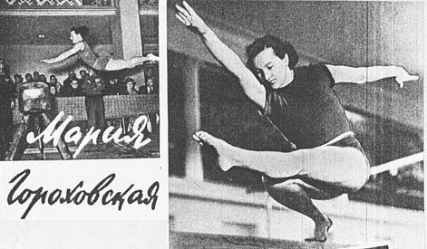

Maria Gorokhovskaya (USSR)
1952 Olympic AA Champion

Medal Total
Olympic Games: 2
gold, 4 Silver
World Championships: 1 Gold, 1 Bronze
Maria was born in Evpatoria (Ukrainian SSR) in 1921. She studied at the Lesgaft Institute of Physical Culture in Leningrad and, upon graduation, she was assigned to Kharkov and joined the Stroitel society, training and coaching there. She was also a judge at domestic competitions throughout the USSR. Her daughter, Galina, was a gymnast and achieved a Master of Sports ranking. Gorokhovskaya was the first Soviet female gymnast to win the Olympic all-around and was awarded the Order of the Red Star in 1957.
Competition Results
1947
USSR Championships: 2nd AA
1948
Leningrad Championships: 1st AA
Match of the Best Gymnasts: 2nd AA
USSR Championships: 2nd AA, 1st V, 1st B
USSR Team Championships: 4th AA
1949
USSR Championships: 3rd AA
USSR Team Championships: 1st AA, 1st HB
1950
Match of the Best Gymnasts: 2nd AA
Spartakiad of Physical Culture Institutes: 1st AA
SWE-URS Dual Meet: 1st Team, 1st AA
Trade Unions Championships: 1st AA, st V. 1st HB
USSR Championships: 2nd AA
USSR-HUN Dual Meet: 1st Team, 3rd AA, 2nd V, 3rd R, 3rd B
USSR Individual Championships: 1st HB, 3rd V, 3rd R, 3rd B
1951
USSR Championships: 2nd AA, 1st FX
USSR Team Championships: 1st AA
1952
Olympic Games: 1st Team, 1st AA, 2nd V, 2nd UB,
2nd B, 2nd FX
1953 1954 1955 This page was created on September
06, 2004 and was last updated on May 25, 2026.
FRA-USSR Dual Meet: 1st Team, 4th AA
Ukrainian Championships: 2nd AA
USSR Championships: 2nd AA
World Championships: 1st Team, 7th AA, 3rd FX, 4th V
Trade Unions Spartakiad: 2nd AA
© Gymn Forum